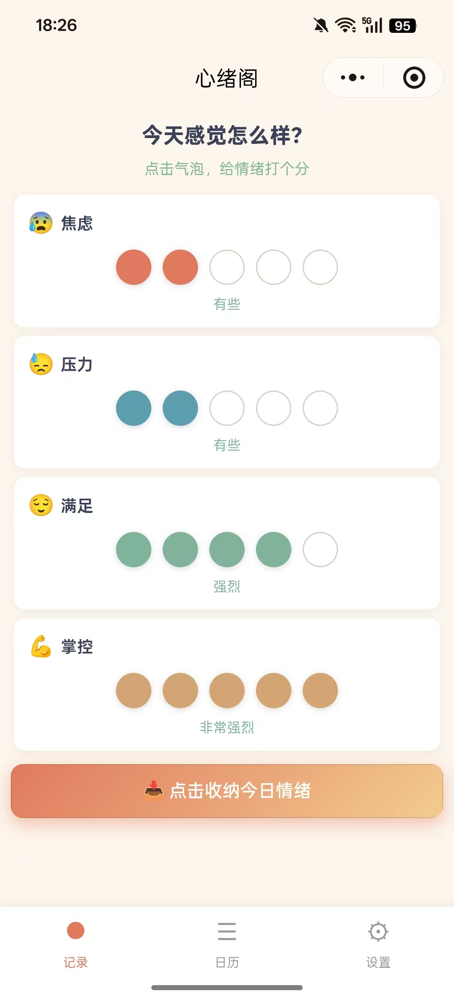
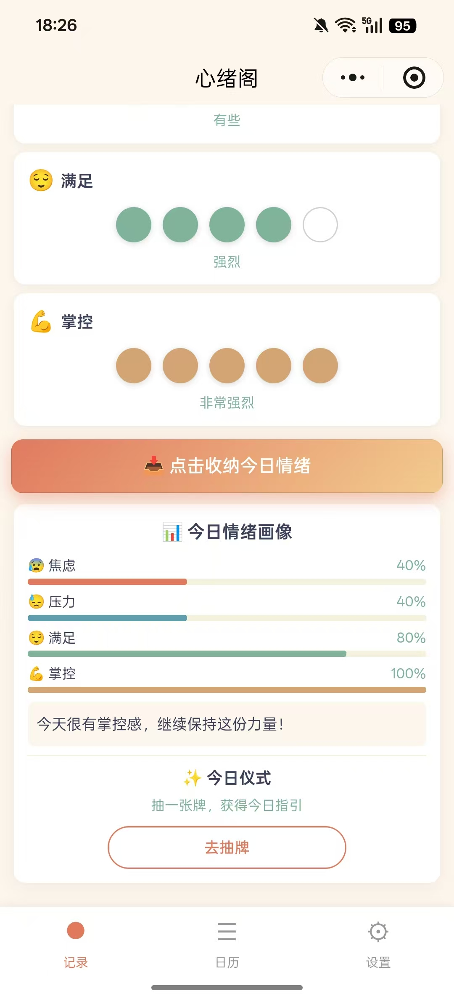
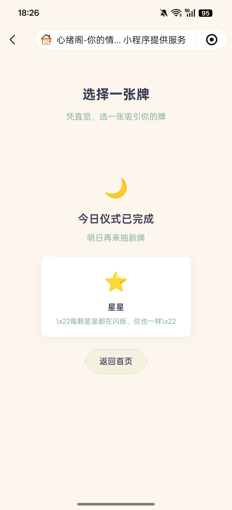
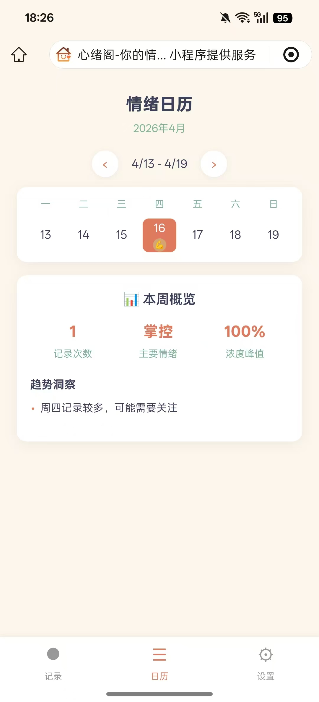
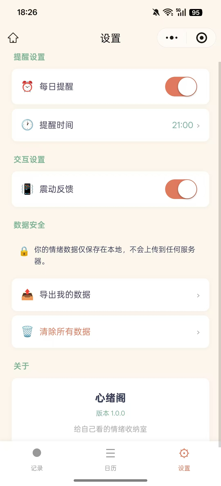

心绪阁是一个给自己看的情绪收纳室小程序，旨在帮助用户记录和管理自己的情绪。通过简单直观的界面，用户可以轻松记录每天的情绪状态，查看情绪变化趋势，以及通过仪式化的方式处理情绪。
主要功能包括：情绪记录、情绪日历、情绪报告、情绪仪式和个人设置。通过这些功能，用户可以更好地了解自己的情绪模式，从而更好地管理和调节情绪。
通过直观的情绪气泡界面，记录每天的情绪状态，包括情绪类型、强度和触发因素。
以日历形式展示情绪变化趋势，帮助用户了解自己的情绪模式和规律。
生成详细的情绪分析报告，包括情绪分布、变化趋势和建议。
提供仪式化的情绪处理方式，帮助用户释放和管理情绪。
自定义情绪类型、提醒设置和个人信息。




